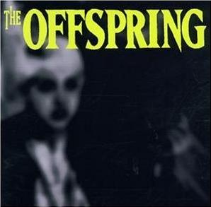
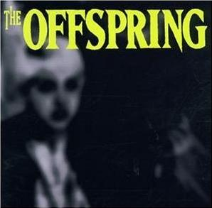

The Offspring
Publicado por Arthur Baldner em

The Offspring foi lançado em 15 de junho de 1989 pela gravadora independente Nemesis Records.
Publicado por Arthur Baldner em

The Offspring foi lançado em 15 de junho de 1989 pela gravadora independente Nemesis Records.